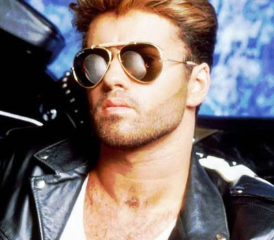

Musico
George Michael
Biografia
Georgios Kyriacos Panayiotou (East Finchley, Baret, Londres, 25 de junio de 1963-Goring-on-Thames, Oxfordshire, 25 de diciembre de 2016), más conocido como George Michael, fue un cantante y compositor británico. Ganó numerosos premios musicales a lo largo de su carrera, incluidos tres Premios Brit, cuatro MTV Video Music Awards, cuatro premios Ivor Novello, tres American Music Awards, y dos veces el Premio Grammy. Michael saltó a la fama en la década de 1980, cuando formó el dúo Wham! junto a su amigo de escuela Andrew Ridgeley. Su primer sencillo en solitario, "Careless Whisper" fue lanzado cuando aún formaba parte del dúo y vendió cerca de seis millones de copias en todo el mundo. Asimismo, era conocido por su controvertida imagen pública, pues fue un sex symbol rodeado de escándalos relacionados con el sexo y las drogas. Tras muchos años negando las especulaciones acerca de su orientación sexual, Michael declaró en 1998 que era gay, tras ser detenido por conducta sexual inapropiada en un baño público de Beverly Hills en California. Como solista, vendió más de 80 millones de discos en todo el mundo, incluidos siete sencillos y siete álbumes que fueron número 1 en listas discográficas de Reino Unido, además de diez sencillos y un álbum que alcanzaron la primera posición en las de Estados Unidos. El álbum con el que debutó como solista de 1987, Faith ha vendido hasta la fecha más de 25 millones de copias en todo el mundo. En 2004, Radio Academy nombró a Michael el artista que acaparó la mayor difusión en la radio británica entre el periodo 1984-2004. El documental A Different Story (2005) cubrió su vida personal y carrera profesional. En 2006, George Michael anunció su primera gira en quince años. La gira 25 Live fue un enorme proyecto mundial por parte de Michael, del que saldrían tres giras individuales a lo largo de tres años consecutivos (2006, 2007 y 2008).
Discografia
- 1987: Faith1987
- 1990: Listen Without Prejudice
- 1996: Older
- 1999: Songs from the Last Century
- 2004: Patience
- 2014: Symphonica
Principios
El primer éxito de George Michael llegó después de formar el dúo Wham! con Andrew Ridgeley allá por 1981. El primer álbum de la banda, Fantastic, apareció el 9 de julio de 1983 en el Reino Unido y fue un éxito a los pocos días de su lanzamiento, alcanzando el puesto número 1 y manteniéndose en él durante dos semanas.17 Contenía una serie de sencillos que entraron en el Top 10 del UK Singles Chart, tales como el primer sencillo del dúo «Young Guns (Go For It!)» que vio la luz el 16 de octubre de 1982 y que alcanzó el puesto 3. Al año siguiente, el 8 de enero, lanzarían su segundo sencillo «Wham Rap! (Enjoy What You Do)» que llegó al puesto 8 de las listas. Cinco meses después, su tercer sencillo «Bad Boys» salió el 14 de mayo de ese año, con el que alcanzaron el puesto 2. Dos meses más tarde, el 30 de julio, su cuarto sencillo «Club Tropicana» salió al mercado y llegaría al puesto 4 de las listasEl primer éxito de George Michael llegó después de formar el dúo Wham! con Andrew Ridgeley allá por 1981. El primer álbum de la banda, Fantastic, apareció el 9 de julio de 1983 en el Reino Unido y fue un éxito a los pocos días de su lanzamiento, alcanzando el puesto número 1 y manteniéndose en él durante dos semanas.17 Contenía una serie de sencillos que entraron en el Top 10 del UK Singles Chart, tales como el primer sencillo del dúo «Young Guns (Go For It!)» que vio la luz el 16 de octubre de 1982 y que alcanzó el puesto 3. Al año siguiente, el 8 de enero, lanzarían su segundo sencillo «Wham Rap! (Enjoy What You Do)» que llegó al puesto 8 de las listas. Cinco meses después, su tercer sencillo «Bad Boys» salió el 14 de mayo de ese año, con el que alcanzaron el puesto 2. Dos meses más tarde, el 30 de julio, su cuarto sencillo «Club Tropicana» salió al mercado y llegaría al puesto 4 de las listas
Discografia WHAM!
- Fantastic
- Make It Big
- Music from the Edge of Heaven
Premios y nominaciones
- 1987:Favourite Male Artist
- 1988:Favourite Album (Pop/Rock)
- 1989:Favourite Album (Pop/Rock)
- 1991:Mejor Álbum Británico
- 1997:Mejor Intérprete Británico Masculino
- 2005:Mejor Sencillo Británico
- 2007:Mejor Directo